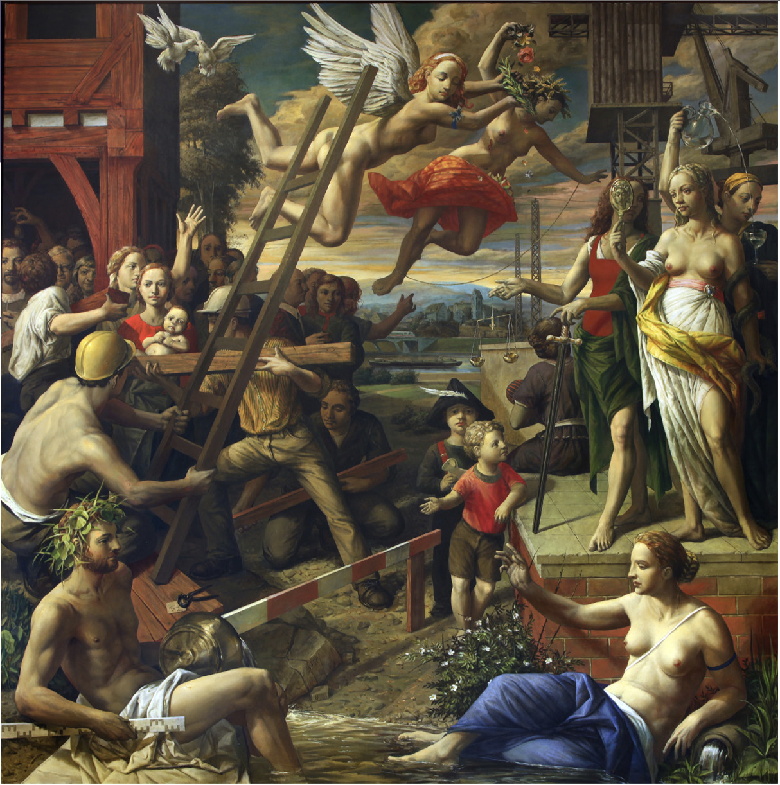

<!DOCTYPE html>
<html lang="en">
<head>
    <meta charset="utf-8" />
    <meta name="viewport" content="width=device-width, initial-scale=1.0, maximum-scale=1.0, user-scalable=no" />

    <title>Nachbereitung Exkursion</title>
    <link rel="stylesheet" href="dist/reset.css">
    <link rel="stylesheet" href="dist/reveal.css" />
    <link rel="stylesheet" href="css/slides-extended.css" />
    <link rel="stylesheet" href="dist/theme/white.css" id="theme" />
    <link rel="stylesheet" href="plugin/highlight/zenburn.css" />
    <link rel="stylesheet" href="plugin/customcontrols/style.css">


    <link rel="stylesheet" href="./css/slides.css" />

    <script defer src="dist/fontawesome/all.min.js"></script>
    <script defer src="plugin/load-mathjax.js"></script>

    <script type="text/javascript">
        function pageInIframe() {
            return (window.location !== window.parent.location);
        }

        let forgetPop = true;
        function onPopState(event) {
            if(forgetPop){
                forgetPop = false;
            } else if( pageInIframe()) {
                parent.postMessage(event.target.location.href, "app://obsidian.md");
            }
        }
        window.onpopstate = onPopState;
        window.onmessage = event => {
            if(event.data == "reload"){
                window.document.location.reload();
            }
            forgetPop = true;
        }

        function fitElements() {
            const itemsToFit = document.getElementsByClassName('fitText');
            for (const item in itemsToFit) {
                if (Object.hasOwnProperty.call(itemsToFit, item)) {
                    const element = itemsToFit[item];
                    fitElement(element, 1, 1000);
                    element.classList.remove('fitText');
                }
            }
        }

        function fitElement(element, start, end) {

            let size = (end + start) / 2;
            element.style.fontSize = `${size}px`;

            if (Math.abs(start - end) < 1) {
                while (element.scrollHeight > element.offsetHeight) {
                    size--;
                    element.style.fontSize = `${size}px`;
                }
                return;
            }

            if (element.scrollHeight > element.offsetHeight) {
                fitElement(element, start, size);
            } else {
                fitElement(element, size, end);
            }
        }

        document.onreadystatechange = () => {
            fitElements();
            if (document.readyState === 'complete') {
                if (pageInIframe() && window.location.href.indexOf("?export") != -1){
                    parent.postMessage(event.target.location.href, "app://obsidian.md");
                }
                if (window.location.href.indexOf("print-pdf") != -1){
                    let stateCheck = setInterval(() => {
                        clearInterval(stateCheck);
                        window.print();
                    }, 250);
                }
            }
        };
    </script>
</head>

<body>
    <div class="reveal">
        <div class="slides"><section  data-markdown><script type="text/template"><!-- .slide: class="drop" -->
<div class="" style="position: absolute; left: 0px; top: 0px; height: 1080px; width: 1920px; min-height: 1080px; display: flex; flex-direction: column; align-items: start; justify-content: center" absolute="true">

<style>
code {
	background-color: #B4B4B4 !important;
}
</style>
<div class="container">
<div style="position: absolute; width: 55%; height: 100%; bottom: 0; right: 0; background-image: url('./Resources/images/RVL-KuWi-Justitia-marmor.jpg'); background-size: cover; background-repeat: no-repeat; background-position: 30% 0;  transform: scaleX(-1);"></div>
<div class="left-bottom-div" style="width: 65%"><div class="left-bottom-div" style="width: 90%; background-color: rgba(119, 47, 139, 1);">
<p class="slide-title-left" style="align-items: flex-end;">Recht und Gerechtigkeit<br>Interdisziplinäre Einführung in die Kulturwissenschaften</p>
<p class="slide-title-left" style="align-items: flex-start; font-size: smaller;">Dr. habil. Joachim Harst<br>Allgemeine und Vergleichende Literaturwissenschaft<br>Universität des Saarlandes</p>
</div></div></div>

<div class="" style="color: white; transform-origin: left top; font-family: Impact; font-size: larger; padding: 5px; box-sizing: border-box; position: absolute; left: 45%; top: 86%; height: 10%; width: 55%; display: flex; flex-direction: column; align-items: start; justify-content: center" id="title">


4. Nachbereitung Exkursion

<aside class="notes"><ul>
<li>Philosophische Hintergründe (Antike)<ul>
<li>Platon über den guten Herrscher (Philosoph) und die Tugenden des Herrschers</li>
<li>Aristoteles’ Klassifikation der Herrschaftsformen</li>
<li>die stoische Lehre: Schicksal, Körper/Geist, Selbstbeherrschung/Seelenruhe, Wiederkehr, Kosmos</li>
<li>Seitenblick auf Seneca?</li>
</ul>
</li>
<li>Marc Aurel als stoischer Herrscher/Philosophenkaiser<ul>
<li>historischer Kontext</li>
<li>die Selbstbetrachtungen als literarisches Dokument</li>
<li>einzelne Maximen</li>
<li>Gegenbeispiel: Macchiavelli, Der Fürst</li>
</ul>
</li>
<li>Kunsthistorische Hintergründe<ul>
<li>allegorische Darstellung/Bildtechnik – Vergleich zur Literatur – Bild und Text</li>
<li>Herrscherikonographie, allegorische Attribute</li>
<li>Präsidentenporträts der Gegenwart</div>
</div></li>
</ul>
</li>
</ul>
</aside></script></section><section  data-markdown><script type="text/template"><!-- .slide: class="drop" -->
<div class="" style="position: absolute; left: 0px; top: 0px; height: 1080px; width: 1920px; min-height: 1080px; display: flex; flex-direction: column; align-items: start; justify-content: center" absolute="true">

<div style="width: 80%; height: 80%; position: absolute; top: 5%; left: 5%; text-align: left;">

## Zur Klausur
- vier Teile
- 20 Minuten pro Teil
- Frage mit inhaltlichem Bezug zu Vorlesungsthema
	- Recht und Literatur: Perspektiven
	- Gericht und Theatralität: Gerichtsszenen
</div>
</div></script></section><section  data-markdown><script type="text/template"><!-- .slide: class="drop" -->
<div class="" style="position: absolute; left: 0px; top: 0px; height: 1080px; width: 1920px; min-height: 1080px; display: flex; flex-direction: column; align-items: start; justify-content: center" absolute="true">

<div style="width: 80%; height: 80%; position: absolute; top: 5%; left: 5%; text-align: left;">

## Zur Exkursion
- „Marc Aurel: Was ist gute Herrschaft?”
- interdisziplinäre Ansätze
	- Philosophie (Ethik)
	- Kunstgeschichte (Ikonographie)
	- Literaturwissenschaft (Autobiografie, Aphoristik)
- Anregung zum gemeinsamen Austausch
</div>
</div></script></section><section  data-markdown><script type="text/template"><!-- .slide: class="drop" data-background-image="https://m.media-amazon.com/images/I/71sDDtECr2L._AC_SY879_.jpg" data-background-position="left" data-background-size="contain" -->
<div class="" style="position: absolute; left: 0px; top: 0px; height: 1080px; width: 1920px; min-height: 1080px; display: flex; flex-direction: column; align-items: start; justify-content: center" absolute="true">

<div style="width: 80%; height: 80%; position: absolute; top: 5%; left: 5%; text-align: left;">


</div>
</div></script></section><section  data-markdown><script type="text/template"><!-- .slide: class="drop" -->
<div class="" style="position: absolute; left: 0px; top: 0px; height: 1080px; width: 1920px; min-height: 1080px; display: flex; flex-direction: column; align-items: start; justify-content: center" absolute="true">

<div style="width: 80%; height: 80%; position: absolute; top: 5%; left: 5%; text-align: left;">

## Philosophische Hintergründe 
### 5./4. Jhdt. v.Chr.
- Platon und Sokrates: dialogische Philosophie
- Platon vs. Sophisten: Glaube an das Gute, Wahre, Schöne
- der Philosoph als „Liebhaber” der höchsten Ideen
- *Politeia*: Dialog über Gerechtigkeit und Herrschaft
</div>
</div></script></section><section  data-markdown><script type="text/template"><!-- .slide: class="drop" -->
<div class="" style="position: absolute; left: 0px; top: 0px; height: 1080px; width: 1920px; min-height: 1080px; display: flex; flex-direction: column; align-items: start; justify-content: center" absolute="true">

<div style="width: 80%; height: 80%; position: absolute; top: 5%; left: 5%; text-align: left;">

## Platon: Politeia
- Bestimmung Gerechtigkeit (Teil und Ganzes, natürliches Verhältnis)
- Analogie Kosmos – Staat – Seele
- Ständeordnung (Handwerker, Wächter, Herrscher) und entsprechende Tugenden (Besonnenheit, Tapferkeit, Weisheit)
- der Philosoph als bester Herrscher (weise und gerecht)
- vs. historische attische Demokratie!
</div>
</div></script></section><section  data-markdown><script type="text/template"><!-- .slide: class="drop" -->
<div class="" style="position: absolute; left: 0px; top: 0px; height: 1080px; width: 1920px; min-height: 1080px; display: flex; flex-direction: column; align-items: start; justify-content: center" absolute="true">

<div style="width: 80%; height: 80%; position: absolute; top: 5%; left: 5%; text-align: left;">

- ["] Wenn nicht entweder die Philosophen Könige werden in den Städten, sagte ich, oder die, die man heute Könige und Machthaber nennt, echte und gründliche Philosophen werden, und wenn dies nicht in eines zusammenfällt: die Macht in der Stadt und die Philosophie, und all die vielen Naturen, die heute ausschließlich nach dem einen oder dem anderen streben, gewaltsam davon ausgeschlossen werden, so wird es, mein lieber Glaukon, mit dem Elend kein Ende haben, nicht für die Städte und auch nicht, meine ich, für das menschliche Geschlecht. (Platon, *Politeia*, 474a)
</div>
</div></script></section><section  data-markdown><script type="text/template"><!-- .slide: class="drop" -->
<div class="" style="position: absolute; left: 0px; top: 0px; height: 1080px; width: 1920px; min-height: 1080px; display: flex; flex-direction: column; align-items: start; justify-content: center" absolute="true">

<div style="width: 80%; height: 80%; position: absolute; top: 5%; left: 5%; text-align: left;">


## Diskussion: Herrschaft der Philosophen?
- &shy;<!-- .element: class="fragment" data-fragment-index="1" -->Politik als Diskurs (Diskussionskultur)
- &shy;<!-- .element: class="fragment" data-fragment-index="2" -->Gewaltenteilung
</div>
</div></script></section><section  data-markdown><script type="text/template"><!-- .slide: class="drop" -->
<div class="" style="position: absolute; left: 0px; top: 0px; height: 1080px; width: 1920px; min-height: 1080px; display: flex; flex-direction: column; align-items: start; justify-content: center" absolute="true">

<div style="width: 80%; height: 80%; position: absolute; top: 5%; left: 5%; text-align: left;">

## Stoische Philosophie
- begründet von Zenon von Kition um 300 v. Chr.
- Kosmische Ordnung, Determinismus und Wiederkehr
- Ziel des Philosophen: Freiheit von Leidenschaften, Selbstgenügsamkeit und Unerschütterlichkeit (= „stoische Ruhe”)
- Kosmopolitismus und Gemeinschaft
- wichtige römische Vertreter: Seneca, Mark Aurel
</div>
</div></script></section><section  data-markdown><script type="text/template"><!-- .slide: class="drop" -->
<div class="" style="position: absolute; left: 0px; top: 0px; height: 1080px; width: 1920px; min-height: 1080px; display: flex; flex-direction: column; align-items: start; justify-content: center" absolute="true">

<div style="width: 80%; height: 80%; position: absolute; top: 5%; left: 5%; text-align: left;">

## Seneca (1–65 n.Chr.)
- Redner, stoischer Philosoph und Tragiker
- Erzieher und Berater von Kaiser Nero (z.B. Schrift *Über die Milde*)
- wegen Verrat zum Selbstmord aufgefordert, stirbt als „Märtyer der Philosophie”
- wichtige Herrschertragödie: *Oedipus* 
</div>
</div></script></section><section  data-markdown><script type="text/template"><!-- .slide: class="drop" -->
<div class="" style="position: absolute; left: 0px; top: 0px; height: 1080px; width: 1920px; min-height: 1080px; display: flex; flex-direction: column; align-items: start; justify-content: center" absolute="true">

<div style="width: 80%; height: 80%; position: absolute; top: 5%; left: 5%; text-align: left;">

## Marc Aurel (121–180)
- römischer Kaiser und Vertreter der stoischen Philosophie
- Adoptivkaiser, „goldenes Zeitalter” Roms
- wichtigstes autobiographisches und philosophisches Werk: *Selbstbetrachtungen*
</div>
</div></script></section><section  data-markdown><script type="text/template"><!-- .slide: class="drop" -->
<div class="" style="position: absolute; left: 0px; top: 0px; height: 1080px; width: 1920px; min-height: 1080px; display: flex; flex-direction: column; align-items: start; justify-content: center" absolute="true">

<div style="width: 80%; height: 80%; position: absolute; top: 5%; left: 5%; text-align: left;">

- ["] Rührt ein Übel von dir selbst her, warum tust du’s? Kommt es von einem andern, wem machst du Vorwürfe? Etwa den Atomen oder den Göttern? Beides ist unsinnig. Hier ist niemand anzuklagen. Denn, kannst du, so bessere den Urheber; kannst du das aber nicht, so bessere wenigstens die Sache selbst; kannst du aber auch das nicht, wozu frommt dir das Anklagen? Denn ohne Zweck soll man nichts tun. (*Selbstbetrachtungen*, VIII, 17)
</div>
</div></script></section><section  data-markdown><script type="text/template"><!-- .slide: class="drop" -->
<div class="" style="position: absolute; left: 0px; top: 0px; height: 1080px; width: 1920px; min-height: 1080px; display: flex; flex-direction: column; align-items: start; justify-content: center" absolute="true">

<div style="width: 80%; height: 80%; position: absolute; top: 5%; left: 5%; text-align: left;">

- ["] Meine Natur aber ist eine vernünftige und auf die staatliche Gemeinschaft bezogene. Die staatliche Gemeinschaft und das Vaterland ist für mich als Antoninus Rom, für mich als Mensch aber der Kosmos. Was für diese Gemeinschaften nützlich ist, nur das ist für mich gut. (*Selbstbetrachtungen*, VI, 44)
</div>
</div></script></section><section  data-markdown><script type="text/template"><!-- .slide: class="drop" -->
<div class="" style="position: absolute; left: 0px; top: 0px; height: 1080px; width: 1920px; min-height: 1080px; display: flex; flex-direction: column; align-items: start; justify-content: center" absolute="true">

<div style="width: 80%; height: 80%; position: absolute; top: 5%; left: 5%; text-align: left;">

- ["] Kämpfe darum, dass du so bleibst, wie dich die Philosophie haben wollte. Ehre die Götter, rette die Menschen. Das Leben ist kurz. Die einzige Frucht des Lebens hier auf Erden sind eine fromme Gesinnung und gemeinnützige Werke. (*Selbstbetrachtungen*, VI, 30)
</div>
</div></script></section><section  data-markdown><script type="text/template"><!-- .slide: class="drop" -->
<div class="" style="position: absolute; left: 0px; top: 0px; height: 1080px; width: 1920px; min-height: 1080px; display: flex; flex-direction: column; align-items: start; justify-content: center" absolute="true">

<div style="width: 80%; height: 80%; position: absolute; top: 5%; left: 5%; text-align: left;">

## Gegenbeispiel: Macchiavelli, *Der Fürst* (1513)
- „Realpolitik”
- „Staatsräson”
- ["] Wie löblich die Bewahrung der Treue, ein lauterer Wandel und ohne List, an einem Fürsten sey, sieht Jeder. Nichtsdestoweniger lehrt die Erfahrung in unsern Zeiten, daß eben *die* Fürsten Großes vollbracht, die auf die Treue wenig gegeben, und die Gehirne der Menschen mit List zu bethören gewußt, und daß sie zuletzt Die überwältigt, deren Richtschnur die Ehrlichkeit war. Ihr müßt daher wissen, daß es zwey Arten des Kampfes giebt, die eine durch die Gesetze, die andre durch die Gewalt. Jene erste Art ist den Menschen eigen, die andre den Thieren. Weil aber die erste öfters nicht ausreicht, muß man die Zuflucht zur zweyten nehmen; daher ein Fürst der Wissenschaft bedarf, das Thier, wie den Menschen, beides wohl anzuwenden. (Macchiavelli, *Der Fürst*, Kap. 18)
</div>
</div></script></section><section  data-markdown><script type="text/template"><!-- .slide: class="drop" -->
<div class="" style="position: absolute; left: 0px; top: 0px; height: 1080px; width: 1920px; min-height: 1080px; display: flex; flex-direction: column; align-items: start; justify-content: center" absolute="true">

<div style="width: 80%; height: 80%; position: absolute; top: 5%; left: 5%; text-align: left;">

## Diskussion
</div>
</div></script></section><section  data-markdown><script type="text/template"><!-- .slide: class="drop" data-background-image="./Resources/images/RVL-KuWi-Justitia-marmor.jpg" data-background-size="cover" data-background-position="right" data-background-opacity="0.7" -->
<div class="" style="position: absolute; left: 0px; top: 0px; height: 1080px; width: 1920px; min-height: 1080px; display: flex; flex-direction: column; align-items: start; justify-content: center" absolute="true">

<div class="block">

## Zum Begriff der Allegorie
- Allegorie und Personifikation
- Allegorie vs. Symbol
- Allegorie als lesbares Bild
- „Das Symbol ist die Identität von Besonderem und Allgemeinem, die Allegorie markiert ihre Differenz.” (Walter Benjamin)
</div>

 <!-- .element: style="background: #DFE1E175; border-radius: 5px; padding: 20px" class="fragment" data-fragment-index="1" -->
</div></script></section><section  data-markdown><script type="text/template"><!-- .slide: class="drop" data-background-image="https://upload.wikimedia.org/wikipedia/commons/e/e8/Ambrogio_Lorenzetti_002.jpg" data-background-position="top" data-background-size="contain" -->
<div class="" style="position: absolute; left: 0px; top: 0px; height: 1080px; width: 1920px; min-height: 1080px; display: flex; flex-direction: column; align-items: start; justify-content: center" absolute="true">

<div style="width: 80%; height: 80%; position: absolute; top: 5%; left: 5%; text-align: left;">


<div class="block">

Ambrogio Lorenzetti: Allegorie der guten Regierung
Fresko, Rathaus Siena, 1338–39
</div>

<!-- .element: style="position: absolute; top: 90%; left: 0" -->

</div>
</div></script></section><section  data-markdown><script type="text/template"><!-- .slide: class="drop" -->
<div class="" style="position: absolute; left: 0px; top: 0px; height: 1080px; width: 1920px; min-height: 1080px; display: flex; flex-direction: column; align-items: start; justify-content: center" absolute="true">

<div style="width: 80%; height: 80%; position: absolute; top: 5%; left: 5%; text-align: left;">



Michael Triegel: Allegorie der guten Regierung, 2000

Stadt Plochingen, Rathaus
</div>
</div></script></section></div>
    </div>

    <script src="dist/reveal.js"></script>
    <script src="plugin/notes/notes.js"></script>
    <script src="plugin/markdown/markdown.js"></script>
    <script src="plugin/obsidian-markdown.js"></script>
    <script src="plugin/highlight/highlight.js"></script>

    <script src="plugin/zoom/zoom.js"></script>
    <script src="plugin/math/math.js"></script>
    <script src="plugin/mermaid/mermaid.js"></script>
    <script src="plugin/chart/chart.umd.js"></script>
    <script src="plugin/chart/plugin.js"></script>
    <script src="plugin/menu/menu.js"></script>
    <script src="plugin/customcontrols/plugin.js"></script>

    <script>
        function extend() {
            const target = {};
            for (let i = 0; i < arguments.length; i++) {
                const source = arguments[i];
                for (const key in source) {
                    if (source.hasOwnProperty(key)) {
                        target[key] = source[key];
                    }
                }
            }
            return target;
        }

        function isLight(color) {
            let hex = color.replace('#', '');

            // convert #fff => #ffffff
            if (hex.length == 3) {
                hex = `${hex[0]}${hex[0]}${hex[1]}${hex[1]}${hex[2]}${hex[2]}`;
            }

            const c_r = parseInt(hex.substr(0, 2), 16);
            const c_g = parseInt(hex.substr(2, 2), 16);
            const c_b = parseInt(hex.substr(4, 2), 16);
            const brightness = ((c_r * 299) + (c_g * 587) + (c_b * 114)) / 1000;
            return brightness > 155;
        }

        const bgColor = getComputedStyle(document.documentElement).getPropertyValue('--r-background-color').trim();

        if (isLight(bgColor)) {
            document.body.classList.add('has-light-background');
        } else {
            document.body.classList.add('has-dark-background');
        }

        // default options to init reveal.js
        const defaultOptions = {
            controls: true,
            progress: true,
            history: true,
            center: true,
            transition: 'default', // none/fade/slide/convex/concave/zoom
            plugins: [
                ObsidianMarkdown,
                RevealHighlight,
                RevealZoom,
                RevealNotes,
                RevealMath.MathJax3,
                RevealMermaid,
                RevealChart,
                RevealCustomControls,
                RevealMenu,
            ],
            allottedTime: 120 * 1000,
            mathjax3: {
                mathjax: 'plugin/math/mathjax/tex-chtml.js',
            },
            markdown: {
                gfm: true,
            },
            mermaid: {
                theme: isLight(bgColor) ? 'default' : 'dark',
            },
            customcontrols: {
                controls: [
                ]
            },
            menu: {
                loadIcons: false
            }
        };

        if ( pageInIframe() ) {
            defaultOptions.scrollActivationWidth = 5;
        }

        // options from URL query string
        const queryOptions = Reveal().getQueryHash() || {};

        const options = extend(defaultOptions, {"controls":true,"progress":true,"slideNumber":true,"center":false,"transition":"slide","transitionSpeed":"default","width":1920,"height":1080,"margin":0.04}, queryOptions);
    </script>

    <script>
      Reveal.initialize(options);
    </script>
    <!-- created with Slides Extended reveal.html template -->
</body>
</html>
